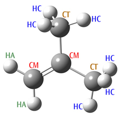

5.53 MM（分子力学）方法
5.53 MM（分子力学）方法¶
Gaussian 中提供三种分子力学（Molecular Mechanics）方法。它们最初是为 ONIOM 计算而实现的，但也可以作为独立方法使用。使用这些关键字时不应指定基组关键字。可用的力场如下：
- Amber：如 [Cornell95] 所述的 Amber 力场。其实际参数（parm96.dat）自该论文发表以来已略有更新。我们使用 Amber 官方网站（
ambermd.org）上的当前版本。 - Dreiding：如 [Mayo90] 所述的 Dreiding 力场。
- UFF：如 [Rappe92] 所述的 UFF 力场。
5.53.1 可用性¶
解析能量、梯度和频率。
5.53.2 原子类型与电荷¶
分子力学分子说明 Molecular Mechanics Molecule Specifications。分子力学计算使用原子类型来确定构成力场的函数和参数。对于同一种元素（例如碳），可能存在许多不同的 MM 原子类型。具体选用哪一种取决于杂化方式、化学环境等因素。对于 UFF 和 Dreiding 计算，Gaussian 会尝试自动分配原子类型。然而，Amber 计算要求在分子说明部分显式指定所有原子类型，如以下示例所示：
C-CT Specifies an SP3 aliphatic carbon atom, denoted by the Amber CT keyword.
C-CT-0.32 Specifies an SP3 aliphatic carbon atom with a partial charge of +0.32.
O-O-0.5 Specifies a carbonyl group oxygen atom (type O) with a partial charge of -0.5.
原子类型关键字紧跟在元素符号之后，并以连字符分隔。原子类型及其相关关键字的定义请参考 Amber 论文 [528]。如示例的第二行和第三行所示，也可以指定部分电荷，作为原子描述的第三个组成部分，同样以连字符分隔。部分原子（点）电荷用于计算静电相互作用。Gaussian 可以使用 QEq 方法 [529] 自动分配这些电荷（采用 QEq 方法 [529]）。请通过在 MM 关键字中指定 QEq 选项来启用此功能，例如：Dreiding=QEq。请注意，这些电荷依赖于几何结构，并在计算开始时计算；但在几何优化或其他改变几何结构的过程中不会更新。若需要，也可以为 UFF 和 Dreiding 计算提供原子类型和电荷。请注意，UFF 和 Dreiding 原子类型的自动分配仅对定义明确的体系可靠，通常显式指定更为安全。使用 MM 方法时，尤其是在修改力场项或定义新项（如下文所述）时，通常需要使用 Geom=Connectivity 显式指定原子间的连接性。注意，GaussView 在构建输入文件时会自动包含此输入部分。
与电荷分配相关的选项
除非在分子说明输入中设置，否则使用任何分子力学力场时，默认不为原子分配电荷。对于任何力学关键字，可以使用以下选项，通过 QEq 算法 [529] 在初始点估算电荷：
QEq
使用 QEq 方法 [529] 为所有原子分配电荷。OldQEq 请求使用较旧的版本，该版本是 G09 Rev. C 中的默认版本 [530]。
UnTyped
仅为用户在输入中未指定特定类型的原子分配 QEq 电荷。
UnCharged
仅为 MM 电荷为零的原子分配 QEq 电荷（即所有未分配类型的原子，以及在输入中已指定类型但未指定电荷的原子），同时使其他原子保留其指定电荷。
5.53.3 选项¶
参数优先级选项
术语：Gaussian 为上述内置力场包含内置参数集；这些参数称为硬编码（hard-wired）参数。软（soft）参数是用户在当前作业的输入流中指定的参数（或在从检查点文件读取参数时，来自之前作业的参数）。默认情况下，若未给出相关选项，则仅使用硬编码参数。该主题将在 Specifications 标签页中详细讨论。
HardFirst
从输入流中读取附加参数，硬编码参数优先于读入的软参数。因此，只有在硬编码参数集中没有对应值时，才使用读入的参数。注意，硬编码参数集中的通配符匹配优先于软参数，即使后者包含与同一项完全匹配的条目。若要覆盖硬编码参数的匹配结果，请使用 SoftFirst。
SoftFirst
从输入流中读取附加参数，软（读入）参数优先于硬编码值。
SoftOnly
从输入流中读取参数，并且仅使用这些参数，忽略硬编码参数。
处理多个参数规定的匹配
由于参数可以使用通配符来指定（参见 Specifying Force Fields 标签页），因此同一结构可能与多个参数规定相匹配。默认情况下，若力场中存在任何歧义，程序将中止运行。以下选项提供了处理多重匹配的其他方式。
FirstEquiv
若某个所需参数存在等价匹配，则使用找到的第一个。
LastEquiv
若某个所需参数存在等价匹配，则使用找到的最后一个。
从检查点文件读取 MM 参数
默认情况下，当使用 Geom=Check 或 Geom=AllCheck 从检查点文件读取几何结构时，检查点文件中存在的任何非标准（软）参数也会一并读取。除非同时指定了 HardFirst，否则这些读入的参数优先级高于对应的硬编码参数。可以使用以下选项修改此默认行为。
ChkParameters
仅从检查点文件读取 MM 参数。除非同时指定了 HardFirst，否则检查点文件中存在的任何非标准（软）参数的优先级高于对应的硬编码参数。不适用于 Geom=Check 或 Geom=AllCheck。
NewParameters
读取几何结构时忽略检查点文件中的所有参数。
Modify
在将检查点文件中的软参数与硬编码参数合并（由优先级选项控制）之后，读取附加的参数规定和修改。该选项的作用方式与 Geom=Modify 类似。
打印 MM 参数
默认情况下，指定 #P 时仅打印能量贡献（即键伸缩、键角弯曲、静电作用等的贡献）。Print 选项还会在第一个几何结构处打印能量贡献和力场参数，并在之后的几何结构处仅打印能量贡献（因为参数不会改变）。对于 ONIOM(MO:MM)，会打印两组参数，因为模型体系和真实体系的参数分配不同（例如，H 可能替代 C 连接原子）。请注意，参数会打印出体系中所有原子的参数，但格式不适合用作输入。内部存储的参数已以输入文件的形式提供在 Gaussian 主目录中（amber.prm、uff.prm 等），此外还有一些未内部存储的力场文件（amber98.prm 和 oplsaa.prm）。对当前作业中的所有原子打印参数仍然有用，因为决定实际应用于某个键、二面角等的参数时涉及复杂的规则。
截断函数选项
VRange=N
将范德华截断设为 N Å。若使用软截断（默认情况），则这即为 ROff。N<0 表示硬截断。
CRange=N
将库仑截断设为 N Å。负值表示硬截断。势函数为 (QiQ j(1−R 2/N 2)2)/R
CutRad=M
使用半径为 M（单位 Å）的软截断，适用于范德华或库仑截断（若设置了 VRange 或 CRange）。因此，对于 N 和 M，软截断为 ROn=N-M，ROff=N。
Switch=value
Switch=YK 表示使用 York-Karplus 函数，这是默认值。Switch=CHARMM 表示对范德华相互作用使用 CHARMM 式开关函数。Switch=CHARMMSq 表示使用 CHARMM 式表达式，但对范德华开关使用 R2 代替 R。Switch=N 表示使用编号为 N 的开关函数。
5.53.4 MM 势函数¶
Gaussian 为希望修改或以其他方式定制 MM 力场的用户提供了极大的灵活性。本节讨论具体的做法，并首先介绍理解函数和参数输入所需的背景信息。基本的 MM 势函数通常具有以下形式：() Kr (r −req)2 K θ (θ −θ eq)2 VnAijij −Bijij + qiq jEtotal= ∑+ ∑+ ∑2 [1+cos(n ϕ −γ)]+ ∑ r 12 r 6ε rij bondsanglesdihedralsi<j stretch termsbend termstorsional termsnon-bonded interactions 分子力学势函数
如前所述，展开式的各项包括伸缩项（键）、弯曲项（键角）、扭转项（二面角）以及非键相互作用。该方程中各个函数的具体形式取自 Amber 力场，Amber 对伸缩和弯曲使用简单的谐振函数，对扭转使用余弦函数，对静电和范德华相互作用使用标准函数。其他力场使用不同的函数，有些还包含 Amber 未包含的其他类型的项，例如偶极相互作用或伸缩-弯曲耦合。为了计算 MM 势函数，Gaussian 需要知道体系中存在哪些结构（伸缩、弯曲和扭转），以及为它们使用的函数和参数。这些结构可以由分子连接性确定。默认情况下，Gaussian 会根据连接性确定哪些原子成键以及相应的键级（单键、双键等）。当输入几何结构比较合理且键级（单键、双键等）都明确时，它的效果很好。然而，若计算从较粗略的几何结构开始，或存在键级不易确定的键，则最好在输入流中使用 Geom=Connectivity 显式指定连接性列表，以确保安全。
查看 MM 函数
考察 Gaussian MM 作业的输出是理解这一主题的有效起点。以下是我们对甲烷进行 Amber 计算所使用的输入文件：
#PAmber=PrintGeom=Connectivity
Methane
01
C-CT--0.4-0.850.420.00
H-HC-0.1-0.50-0.570.00
H-HC-0.1-0.500.930.87
H-HC-0.1-0.500.93-0.87
H-HC-0.1-1.920.420.00
请注意，碳原子的原子类型为 CT，氢原子的原子类型为 HC。我们还为每个原子分配了部分电荷。以下是作业路由段中 Amber=Print 生成的输出部分：
Atomic parameters: MM functions for single atoms.
CenterVDW
11.9080.1094000
21.4870.0157000
31.4870.0157000
41.4870.0157000
51.4870.0157000
Molecular mechanics terms: MM functions of 2 of more atoms.
NBDir 3 1 0 0 Non-bonded interactions master function.
HrmStr1 1-2 340.00 1.0900 Stretch terms.
HrmStr11-3340.001.0900
HrmStr11-4340.001.0900
HrmStr11-5340.001.0900
HrmBnd1 2-1-3 35.00 109.50 Bend terms.
HrmBnd12-1-435.00109.50
HrmBnd12-1-535.00109.50
HrmBnd13-1-435.00109.50
HrmBnd13-1-535.00109.50
HrmBnd14-1-535.00109.50
NBPair 2-1 3 1 0 0 -1.000 -1.000 Non-bonded interactions
NBPair 3-1 3 1 0 0 -1.000 -1.000 of close neighbors.
NBPair3-23100-1.000-1.000
NBPair4-13100-1.000-1.000
NBPair4-23100-1.000-1.000
NBPair4-33100-1.000-1.000
NBPair5-13100-1.000-1.000
NBPair5-23100-1.000-1.000
NBPair5-33100-1.000-1.000
NBPair5-43100-1.000-1.000
原子参数
某些 MM 函数仅取决于相关原子的原子类型。在我们的例子中，Amber 为每个原子包含范德华相互作用，其结果列于前面输出中的 Atomic parameters 之下。中心编号对应于分子说明中的原子位 置。DREIDING 和 UFF 力场仅包含这一类型的项。力场项 列出了总势能中描述多个原子之间相互作用的各项。例如，对于每一对成键原子（1-2、1-3 和 1-4），都存在伸缩项，由名为 HrmStr1 的函数计算，力常数为 340 kcal/(mol-Å2)，平衡键长为 1.09 Å。这些参数值由中心 1 和 2 的原子类型决定：分别为 CT 和 HC。具体函数和参数的选取方式如下：根据连接性，程序知道中心 1 与 2 之间存在一个键。Amber 力场要求对所有成键原子对设置伸缩项，各种函数和参数存储在程序的内部表中。在最简单的情况下，Gaussian 使用两个原子类型来查找要使用的函数和参数。在本例中，使用的是以下条目
HrmStr1CTHC3401.09
因为它对应于甲烷中 C-H 键的两个原子类型。随后，该条目中指定的力常数和平衡键长将用于计算。当我们在下面的参考部分查阅此函数时，会看到实际的项按 ForceC ∗(R−Req)2 计算，其中 ForceC 为力常数，Req 为平衡键长，R 为键长；在本例中，即变为 340.0*(R-1.09)2。
项列表包括所有成键原子对的伸缩项，以及所有相应键角的弯曲项。
非键相互作用项 列表中的其余项对应于非键相互作用：即由未成键原子之间相互作用产生的势能贡献。在具体考察它们之前，我们需要了解它们的计算方式。一般而言，非键项列表由所有可能的原子对构成，因此项的数目与原子数呈二次方关系。然而，根据分隔两原子的键数，彼此靠近的原子之间的相互作用通常会被缩小。通常，相隔一键和两键的相互作用被缩放为零（因为这些相互作用已由伸缩项和弯曲项描述）。相隔三键的相互作用则按照力场的不同，以介于零和一之间的因子进行缩放。显然，对于较大的体系，非键项列表可能变得非常长。在大多数 MM 程序中，通常使用截断来控制列表的规模。在 Gaussian 中，我们采用一种较少见的方法来高效处理非键相互作用。体系中的总非键能可以写成如下形式：[] Nj<i ENB =∑∑svdWEvdW+sQijEQ i jijij ij [][()()] j<ij<iNN EvdW+EQ 1−svdWEvdW 1−sQEQ=∑∑+∑∑+ i jijijijijij ijij all pairs“overcounted” pairs 总非键能表达式
其中 EvdW 和 EQ 分别为两个中心之间的范德华相互作用和静电相互作用，相应的 s 值为相关的缩放因子。第一个方程采用非键相互作用的常规形式，第二个方程则是等价的表达式：在不考虑缩放的情况下（不论距离如何）计算所有可能的非键相互作用（第一项），然后减去被重复计算的原子对（第二项）。这种重新表述具有显著的计算优势。第一项可以利用线性标度和其他技术高效计算。此外，由于大多数原子对的缩放因子 si j 为 1，第二项中的大多数原子对给出的相互作用为零（前提是体系不太小）。程序只需保留那些给出非零相互作用的原子对列表，即可计算第二项。其结果是一种无需截断、且所需列表长度仅随体系大小线性增长的高效算法。在构造这两个非键相互作用项时，使用了 NBDir 和 NBTerm 函数。如前面的甲烷作业输出所示，单个 NBDir 函数描述了所有原子对之间的完整相互作用集合，即改写后方程的第一项。各个 NBTerm 条目构成方程中的第二项。这些函数的最后两个参数分别是范德华相互作用和库仑相互作用的缩放因子。在甲烷例子中，由于没有任何原子之间相隔超过两个键，因此所有项的两个缩放因子均为 1，最终的非键相互作用因此为 0。
5.53.5 指定力场¶
添加与替换参数 当硬编码参数不可用时（无论是因为表格不完整，还是引入了新的原子类型），都需要在输入流中指定它们。确定合适的参数可能颇具挑战。这些参数通常可以在文献中找到；否则就需要从实验或精确的计算数据中推导（该主题超出了本文的讨论范围）。要指定新参数，请使用 Amber=HardFirst 关键字，然后在单独的部分将其添加到输入文件中。在本例中，我们为缺失的原子类型序列定义 HrmBnd1 函数。随后，2-甲基丙烯作业的输入如下所示：
#Amber=HardFirst
2-methylpropene
01
C-CM-2.530.190.00
分子说明继续···
HrmBnd1CTCMCT70.0120.0
HrmBnd1HACMHA40.0120.0
本例中使用的参数值是基于现有 Amber 参数的粗略估计。HardFirst 选项表示程序会首先检查通常的 Amber 硬编码参数表中的函数——称为硬参数——只有在不存在匹配时，才使用输入文件中定义的函数。使用 SoftFirst 选项，则可以替换硬编码参数集中的参数。请注意，只有当同一函数同时出现在两个参数列表中时，HardFirst 和 SoftFirst 指定的顺序才有意义。最后，SoftOnly 选项表示完整的力场定义将在输入文件中提供，并完全忽略硬编码参数集。
#Amber
2-methylpropene
01
C-CM-2.530.190.00
H-HA-2.00-0.730.00
H-HA-3.600.190.00
C-CM-1.861.370.00
C-CT-2.632.700.00
H-HC-1.933.510.07
H-HC-3.242.76-0.88
H-HC-3.242.760.85
C-CT-0.321.370.00
H-HC0.031.87-0.83
H-HC0.031.870.81
H-HC0.030.36-0.00
指定缺失参数 考虑以下分子：2-甲基丙烯。我们为该体系设置了 Amber 计算，将 SP2 杂化碳指定为原子类型 CM，将 SP3 杂化碳指定为原子类型 CT。图 5.2：2-甲基丙烯
运行此作业时，程序会以以下错误信息终止：
Anglebendundefinedbetweenatoms213
Anglebendundefinedbetweenatoms549
MMfunctionnotcomplete
原子 2-1-3 对应原子类型 HA-CM-HA，原子 5-4-9 对应 CT-CM-CT。尽管这些原子类型和序列在化学上是合理的，但硬编码表格中没有这些弯曲项的条目。

原因在于 Amber 力场是专为生物化学体系开发的，这些特定的原子类型序列在生物化学体系中并不出现。因此，Amber 并未定义这些参数。请注意，Gaussian 仅检查是否为所有伸缩和弯曲找到了函数；若表格中没有对应条目，则扭转项和其他项会被直接从总势函数中省略。
使用外部参数文件
可以通过使用通常的 Gaussian 包含文件机制，用外部文件中的 MM 函数条目替换输入文件中的条目：例如 @oplsaa.prm。各种力场的参数文件包含在 Gaussian 主目录（即 $g16root/g16）中。如果希望通过外部文件指定整个力场，请使用如下输入文件：
#UFF=SoftOnly
Read-inforcefieldexample
分子说明
@$g16root/g16/oplsaa.prm
请注意，分子力学关键字的选择是任意的，因为整个力场取决于读入的函数和参数，而不取决于任何内部函数（换言之，指定 Amber 与指定 UFF 将得到相同的结果）。
函数规定中的通配符
函数规定中可以使用通配符。例如，以下 Amber 弯曲函数指定：所有中心碳原子为 CM 类型的键角都具有相同的参数值：
HrmBnd1*CM*70.0120.0
也可以同时包含一个使用通配符的通用条目以及其他更具体的条目：
HrmBnd1*CM*70.0120.0
HrmBnd1HACMHA40.0120.0
默认情况下，程序会使用适用于特定结构的最具体条目（此处为以 CM 碳为中心的键角）。相对特异性由条目中通配符的数目决定。如果存在同样具体的不同条目，程序将以多重匹配条目错误信息终止。在这种情况下，可以分别使用 FirstEquiv 或 LastEquiv 选项，指示程序使用第一个或最后一个匹配项。但需注意，多重匹配信息通常表明软参数集存在某种不一致，需要加以调查和解决。请注意，通配符/条目特异性并不影响是使用硬编码集还是软参数集中的条目。因此，当指定 SoftFirst 时，即使硬编码集中存在与所讨论的原子类型序列完全匹配的条目，输入文件中包含三个通配符的条目仍会被使用。
子结构：利用键级和其他结构特征选择参数
子结构提供了一种利用键级和键角等附加结构信息来决定使用哪些参数的机制。以丁二烯为例（如下图所示）。碳原子均为 CM 类型，但其中两个键在形式上为双键，另一个为单键。默认情况下，Amber 对每种已定义的原子类型组合的伸缩项使用相同的力常数和平衡键长。然而，可以使用子结构为不同类型的键分配不同的值。子结构编号附加在函数名之后，并以连字符分隔：例如 HrmStr-1、HrmStr-2 等。在本例中，这些编号指的是键级（参见下文的子结构定义）。有时会使用多个子结构后缀（例如 AmbTrs-1-2）。丁二烯计算的输入文件显示在分子结构图的下方：图 5.3：丁二烯分子
#Amber=SoftFirstGeom=Connectivity
Butadiene
01
C-CM-2.49-0.070.00
H-HA-1.96-1.000.00
H-HA-3.56-0.070.00
C-CM-1.821.090.00
H-HA-2.352.020.00
C-CM-0.281.090.00
H-HA0.240.160.00
C-CM0.392.26-0.00
H-HA-0.133.190.00
H-HA1.462.26-0.00
121.031.042.0
2
3
451.061.0
5
671.082.0
7
891.0101.0
9
10

HrmBnd1 HA CM HA 40.0 120.0 参数值仅供说明用途！
HrmBnd1CMCMCM70.0120.0
HrmStr1-1 CM CM 350.0 1.51 子结构：键级特异性伸缩参数。
HrmStr1-2CMCM500.01.37
此示例为与 HrmStr1 函数配合使用的双键指定了更大的力常数和更小的平衡键长。请注意，本例中参数值仅用于说明目的。事实上，对于实际计算，我们还需要使用相同的子结构机制，为单键或双键中心键定义特定的扭转参数。除键级外，子结构的其他示例还包括该项是否位于环状结构中、与之相连的氢原子数目等。注意，多个子结构后缀可以与许多函数一起使用：例如 HrmStr1-1-0-4。子结构槽位在不同函数中具有相对一致的含义。第一个子结构后缀定义键级或键角范围，第二个指定与当前原子相连的原子数，第三个描述环境（若有）。任一子结构槽位中的 0 值起通配符/占位符的作用，表示对该条目忽略该子结构。不需要的末端子结构可以设为 0，或直接省略。以下子结构适用于仅依赖原子类型的函数：
第三个子结构：环境（第一和第二个子结构必须为 0）：-0-0-1 不适用以下任何环境 -0-0-3 原子位于三元环中 -0-0-4 原子位于四元环中 -0-0-5 原子位于五元环中
以下子结构适用于与键伸缩相关的函数：
第一个子结构：键级 -0 忽略该子结构（子结构“通配符”）-1 单键：0.00 ≤键级 < 1.50 -2 双键：1.50 ≤键级 < 2.50 -3 三键：键级 ≥2.50 第三个子结构：环境（若使用，第二个子结构必须为 0）：-x-0-1 不适用以下任何环境 -x-0-3 键位于三元环中 -x-0-4 键位于四元环中 -x-0-5 键位于五元环中
以下子结构适用于键角相关的函数（角度值以度为单位）：
第一个子结构：键角范围 0 o ≤θ ≤45 o -1 45 o < θ ≤135 o -2
135 o < θ ≤180 o -3 第二个子结构：成键原子数目 -x-0 忽略该子结构（子结构“通配符”）-x-n 为与中心原子相连的原子数 第三个子结构：环境 -x-y-0 忽略该子结构（子结构“通配符”）-x-y-1 不适用以下任何环境 -x-y-3 弯曲位于三元环中 -x-y-4 弯曲位于四元环中 -x-y-5 弯曲位于五元环中 第四个子结构：成键氢原子数 x-y-z-n 表示与中心原子相连（不包括构成该键角本身的原子）的氢原子数为 n+1
以下子结构适用于涉及二面角的函数。
第一个子结构：键级 -0 跳过该子结构（子结构“通配符”）-1 单中心键：0.00 ≤键级 < 1.50 -2 双中心键：1.50 ≤键级 < 2.50 -3 三中心键：键级 ≥2.50 第二个子结构：中心键的键类型 -x-0 跳过该子结构（子结构“通配符”）-x-1 共振中心键（1.30 ≤键级 ≤1.70）-x-2 酰胺中心键（优先于共振）-x-3 其他中心键类型 第三个子结构：环境 -x-y-1 不适用以下任何环境 -x-y-4 二面角位于四元环中 -x-y-5 二面角位于五元环中
例如，HrmStr1-2-0-4 表示 HrmStr1 项仅适用于涉及位于四元环中的双键的伸缩（相比之下，HrmStr1-2 适用于所有双键）。子结构值为零的作用类似于通配符：HrnStr1-0-0-4 表示该项适用于任意键级的伸缩，但该键必须位于四元环中。
请注意,并非总是需要子结构。有些函数在其定义中明确包含键级及类似的结构信息。例如,UFF 力场中的 HrmStr3 伸缩项在其第三个参数中包含键级。在进行 UFF 计算时,可以对每个键将该参数指定为 -1.0,在输入文件中使用如下形式(并配合 UFF 关键字的相应选项):
HrmStr3**-1.00.1332
定义新原子类型 Gaussian 能够识别 Dreiding、UFF 和 Amber 力场中的标准 MM 原子类型。然而,当所研究的体系不是这些力场所参数化的对象时,现有的原子类型可能都不合适。此时,只需在分子规格中使用一个新的原子类型标签,即可定义新的原子类型。由于新的原子类型不存在于内置表格中,因此还需要在输入文件中定义所有使用这些类型的所需函数。
非键相互作用主函数 如前所见,指定非键相互作用项可能相当冗长,需要许多 NBTerm 项。当在输入中指定非键相互作用时(使用 MM 关键字的某个选项),可以使用 NonBon 函数来指定。该函数仅用一条记录即可定义非键相互作用,程序会自动将其展开为相应的 NBDir 和 NBTerm 条目。该函数的一般形式如下:NonBon V-Type C-Type V-Cutoff C-Cutoff VScale1 VScale2 VScale3 CScale1 CScale2 CScale3 V-Type 和 C-Type 为整数,分别表示所用的范德华相互作用和库仑相互作用类型。其余项为截断值以及两类相互作用各自的三个缩放因子;后者分别是针对相隔 1、2 以及 3 个或更多键的原子的缩放因子。当任一缩放因子 <0 时,使用 1.0/|缩放因子| 作为实际缩放因子。作为示例,以下是标准 Amber 力场所用的函数:
NonBon31000.00.00.50.00.0-1.2
该函数指定了 Amber 的算术范德华相互作用、1/R 库仑相互作用,且无截断。对于相隔超过 2 个键的原子,范德华相互作用的缩放因子为 0.5;对于更近的原子对,则将其移除。对于相隔超过 2 个键的原子,库仑相互作用的缩放因子为 1.0/1.2;对于更近的原子对,同样将其移除。
全局参数 在某些情况下,势函数所需的参数与特定原子类型根本无关。一个例子是介电常数。对于这类情况,我们使用全局参数:即可在势函数中用作参数的已定义数值。所有已定义的全局参数都会列在输出的 MM 力场定义部分中(通过 Print 选项请求)。以下是介电常数定义的示例:
Dielc78.39
全局参数也可以以向量或矩阵形式指定。以下摘自 MM2 力场定义的片段说明了在计算范德华相互作用时,如何在用于指定氢的位移(即原子间距离缩放)的函数中使用矩阵:默认情况下,对 VDWShf2 使用索引值 1VDWShf1 * 1 0.0
VDWShf1 MM5 2 -1.0 Use index value 2 for atom type MM5
VDWShf1 MM36 3 -1.0 Use index value 3 for atom type MM36
VDWShf2 1 2 0.915 Scale factor: matrix element (1,2)
VDWShf2 1 3 0.915 Scale factor: matrix element (1,3)
我们按相反的顺序来考虑这两个函数。VDWShf2 设置了一个用于原子间距离的下三角缩放因子矩阵。元素 (1,2) 和 (1,3) 均设为 0.915;其余元素——(1,1)、(2,2)、(2,3) 和 (3,3)——保持默认值,即在范德华相互作用计算中距离不做缩放。注意,这种形式与原子类型无关。VDWShf1 函数定义了对于各原子类型应使用矩阵中的哪些元素。第一条记录将默认索引值设为 1,其余两条记录分别为原子类型 MM5 和 MM36 指定索引值 2 和 3。该函数的第三个参数指定相互作用中涉及的第二个中心。在第一条记录中,0.0 充当通配符,而在另外两条记录中,-1 的值告诉程序自动填入相应的中心。这些函数的结果是,只有涉及 MM5(H)或 MM36(D)类型原子与另一种不同类型原子之间的键会被平移。计算这些函数时,MM5-X 类型的相互作用使用元素 (1,2),MM36-X 类型的相互作用使用 (1,3)。涉及其他类型的相互作用使用 (1,1),而 MM5-MM5、MM5-MM36 和 MM36-MM36 分别使用 (2,2)、(2,3) 和 (3,3)——所有这些均使用未缩放的原子间距离。借助这一机制,参数指定更加清晰紧凑。若没有它,则需要为每一对原子都设置一条记录才能达到同样的目的。
阶梯表 通配符提供了一种机制,用于指定通用参数或默认值,这些参数或默认值并不明确依赖于某一项中涉及的每个原子类型。阶梯表具有相同的目的,但更为复杂。考虑以下示例,摘自 UFF 力场。在这些条目中,UseTable 和 StepDown 条目并非势函数,也不包含参数,而是描述用于处理引用势函数并包含参数的条目的阶梯机制。在以下示例中,第一组 UFFBnd3 行定义势函数,而 UFFBnd2 行以及第二组 UFFBnd3 行使用阶梯机制:UseTable UFFBnd2 #3 指定用于所列函数的阶梯表
UseTableUFFBnd3#3
StepDown UFFBnd2 0 1 0 所列函数的匹配规则
StepDownUFFBnd2020
StepDownUFFBnd3010
StepDownUFFBnd3020
Table #3 C_RTrig 定义替代原子类型
Table#3N_RTrig
Table#3H_Lin
Table#3LiLin
UFFBnd30 C_30 109.471-1.0 -1.0 0.1332 使用显式原子类型定义的函数 UFFBnd30 N_30 106.700-1.0 -1.0 0.1332
UFFBnd30N_20111.200-1.0-1.00.1332
UFFBnd30O_30104.510-1.0-1.00.1332
UFFBnd2-0-20 Lin0 2-1.0 -1.0 0.1332 使用阶梯类型及子结构定义的函数 UFFBnd2-0-30 Trig0 3-1.0 -1.0 0.1332 使用阶梯类型及子结构定义的函数(续)
UFFBnd3-0-30Lin0180.0-1.0-1.00.1332
UFFBnd3-0-40Lin0180.0-1.0-1.00.1332
UFFBnd3-0-50Lin0180.0-1.0-1.00.1332
UFFBnd3-0-60Lin0180.0-1.0-1.00.1332
UFFBnd3-0-20Trig0120.0-1.0-1.00.1332
UFFBnd3-0-40Trig0120.0-1.0-1.00.1332
UFFBnd3-0-50Trig0120.0-1.0-1.00.1332
UFFBnd3-0-60Trig0120.0-1.0-1.00.1332
H_ 和 N_R 是 UFF 力场中的 UFF 原子类型。若分子中存在涉及此类原子的键角——H_-N_R-H_——程序需要确定应使用的函数及参数。首先,它确定可用键弯曲函数所对应的阶梯表。在本例中,表 #3 同时用于两个可用的键弯曲函数:UFFBnd2 和 UFFBnd3。Table 条目为指定的原子类型定义替代类型。通常,它们会把许多具体的原子类型映射到一个更通用的伪类型(例如示例中的 Lin 和 Trig)。这些替代类型使得可以为函数参数指定适用范围较广的默认值,从而有效地使未定义的参数能够被自动估算。StepDown 条目指定用于选择特定函数条目的匹配规则。在本例中,两个键弯曲函数使用相同的两个条目:0 1 0 和 0 2 0。它们规定程序首先应查找以原始原子类型作为中心原子的条目(零值充当通配符)。若不存在此类条目,则应使用以第一个替代原子类型作为中心原子的条目。在本例中,程序会查找以 N_R 为中心原子的键弯曲函数,但并未定义此类函数。接着,它会查找以 Trig 为中心原子类型的函数。这样的函数共有四个:UFFBnd2-0-3 和 UFFBnd3-0,其第二个子结构分别为 2、4 和 5。具体使用哪一个取决于与中心氮原子相连的原子数。注意,在实践中,阶梯表可以为各种原子类型指定多个替代类型,并且还可以包含映射到每个所列替代类型的更多类型。使用阶梯表时,其他函数定义中的任何通配符都会被忽略。换言之,若选择使用阶梯表,则不能在其他任何地方使用通配符。
5.53.6 力场项¶
初步说明
- 单位:除非另有说明,距离单位为埃(Å),角度单位为度,能量单位为 kcal/mol,电荷单位为原子单位。
- 在方程中,R 表示距离,θ 表示角度。数字和变量下标指代中心原子,"eq" 表示平衡值:例如,R 12 和 Rij 分别是原子 1 与 2 之间以及原子 i 与 j 之间的键长,Ri 是原子 i 的键半径,Req 与 θ eq 是平衡键长和平衡键角,Req 12 是原子 1 与 2 之间的平衡键长(通常用于键角项中)。
- 任何函数定义中均可使用通配符。通配符以 0 或星号表示。
- 括号中给出的是与标准力场中相应函数的等价关系。
VDW : 范德华参数,用于 NBDir 和 NBTerm(MMFF94 型范德华参数见下文 MMFF94)
VDW Atom-type Radius Well-depth
VDW94 : MMFF94 型范德华参数(用于 NBDir 和 NBTerm)
VDW94 Atom-type Atomic-pol NE Scale1 Scale2 DFlag
Atomic-pol 原子极化率(单位 埃³)。NE Slater-Kirkwood 有效价电子数(无量纲)。缩放因子(单位 埃^1/4)。Scale1 Scale2 缩放因子(无量纲)。DFlag 给体型原子为 1.0,受体型原子为 2.0,其他情况为 0.0。
Buf94 : MMFF94 静电缓冲
Buf94 Atom-type Value
NonBon : 非键相互作用主函数。该函数会在计算 MM 能量之前展开为原子对以及直接函数(NBDir 和 NBTerm)。
NonBon V-Type C-Type, V-Cutoff C-Cutoff VScale1 VScale2 VScale3 CScale1 CScale2 CScale3
V-Type 为范德华类型:
0 无范德华作用 1 算术平均(同 Dreiding) 2 几何平均(同 UFF) 3 算术平均(同 Amber) 4 MMFF94 型范德华作用 5 MM2 型范德华作用 6 OPLS 型范德华作用
C-Type 为库仑类型:
0 无库仑作用 1 1/R 2 1/R2 3 缓冲 1/R(MMFF94) 10 无截断的偶极-偶极相互作用
V-Cutoff 和 C-Cutoff 分别为范德华和库仑截断:
0 无截断 >0 硬截断 <0 软截断
Vscale1-3 为 1 至 3 键分隔原子对的范德华缩放因子。CScale1-3 为 1 至 3 键分隔原子对的库仑缩放因子。若任一缩放因子 < 0.0,则使用 1.0/|缩放因子| 进行缩放(例如,指定缩放因子为 -1.2 时,缩放比例为 1.0/1.2)。
NBDir : 库仑及范德华直接作用(对所有原子对求值)
NBDir V-Type C-Type V-Cutoff C-Cutoff
V-Type、C-Type、V-Cutoff 和 C-Cutoff 含义同上。
NBTerm : 库仑及范德华单项截断
NBTerm Atom-type1 Atom-type2 V-Type C-Type V-Cutoff C-Cutoff V-Scale C-Scale
V-Type、C-Type、V-Cutoff、C-Cutoff、V-Scale 和 C-Scale 含义同上。
AtRad : 原子单键半径
AtRad Atom-type Radius
EffChg : 有效电荷(UFF)
EffChg Atom-type Charge
EleNeg : GMP 电负性(UFF)
EleNeg Atom-type Value
Table : 阶梯表
Table Original-atom-type Stepping-down-type(s)
HrmStr1 : 谐振伸缩 I(Amber 1):ForceC ∗(R−Req)2
HrmStr1 Atom-type1 Atom-type2 ForceC R eq
ForceC 力常数 Req 平衡键长
HrmStr2 : 谐振伸缩 II(Dreiding 4a):ForceC ∗[R−(Ri +R j −Delta)]2
HrmStr2 Atom-type1 Atom-type2 ForceC Delta
ForceC 力常数 Delta Delta 参数
Ri 与 R j 为用 AtRad 指定的原子键半径。
HrmStr3 : 谐振伸缩 III(UFF 1a):k ∗(R−Rij)2
平衡键长 Rij = (1−PropC ∗lnBO)∗(Ri +R j)−Ren 力常数 k = 664.12∗Zi ∗Z j/(R 3 ij) 电负性修正 Ren = Ri ∗R j ∗[SQRT(Xi)−SQRT(Xj)]2/(Xi ∗Ri +Xj ∗R j)
HrmStr3 Atom-type1 Atom-type2 BO PropC
BO 键级(若 <0,则动态确定)PropC 比例常数
Ri 与 R j 为用 AtRad 定义的原子键半径。Xi 与 Xj 为用 EleNeg 定义的 GMP 电负性值。Zi 与 Z j 为用 EffChg 定义的有效原子电荷。
MrsStr1 : Morse 伸缩 I(Amber):DLim∗(e−a(R−Req) −1)2 其中 a = SQRT(ForceC/DLim)
MrsStr1 Atom-type1 Atom-type2 ForceC R eq DLim
ForceC 力常数 Req 平衡键长 DLim 解离极限
MrsStr2 : Morse 伸缩 II(Dreiding 5a):DLim∗(e−a(Ri+R j−Delta) −1)2 其中 a = SQRT(ForceC/DLim)
MrsStr2 Atom-type1 Atom-type2 ForceC Delta DLim
ForceC 力常数 Delta Delta 参数
DLim 解离极限
Ri 与 R j 为用 AtRad 定义的原子键半径。
MrsStr3 : Morse 伸缩 III(UFF 1b):BO∗DLim∗(e−a(R−Rij) −1)2 其中 a = SQRT(k/[BO*DLim])
平衡键长 Rij = (1−PropC ∗lnBO)∗(Ri +R j)−Ren 力常数 k = 664.12∗Zi ∗Z j/(R 3 ij) 电负性修正 Ren = Ri ∗R j ∗[SQRT(Xi)−SQRT(Xj)]2/(Xi ∗Ri +Xj ∗R j)
MrsStr3 Atom-type1 Atom-type2 BO PropC DLim
BO 键级(若 <0,则动态确定)PropC 比例常数 DLim 解离极限
Ri 与 R j 为用 AtRad 定义的原子键半径。Xi 与 Xj 为用 EleNeg 定义的 GMP 电负性值。Zi 与 Z j 为用 EffChg 定义的有效原子电荷。
QStr1 : 四次伸缩 I(MMFF94 2):(Req/2)∗(R−ForceC)2 ∗[1+CStr ∗(R−ForceC +(7/12)∗CStr 2 ∗(R−ForceC)2]
QStr1 Atom-type1 Atom-type2 ForceC R eq CStr
ForceC 力常数(md·Å⁻¹)Req 平衡键长 CStr 三次伸缩常数(Å⁻¹)
UFFVOx : 氧族原子的扭转势垒(UFF 16)
UFFVOx Atom-type Barrier
UFFsp3 : 原子 SP3 扭转势垒(UFF 16)
UFFVsp3 Atom-type Barrier
UFFVsp2 : 原子 SP2 扭转势垒(UFF 17)
UFFVsp2 Atom-type Barrier
HrmBnd1 : 谐振键角弯曲(Amber 1):ForceC ∗(θ −θ eq)2
HrmBnd1 Atom-type1 Atom-type2 Atom-type3 ForceC θ eq
力常数(单位 kcal/(mol·rad²))ForceC θ eq 平衡角
HrmBdn2 : 谐振键角弯曲(Dreiding 10a):[ForceC/sin(θ 2 eq)]∗(cos(θ)−cos(θ eq))2
HrmBnd2 Atom-type1 Atom-type2 Atom-type3 ForceC θ eq
ForceC 力常数 θ eq 平衡角
LinBnd1 : Dreiding 线性键角弯曲(Dreiding 10c):ForceC ∗(1+cos(θ))
LinBnd1 Atom-type1 Atom-type2 Atom-type3 ForceC
ForceC 力常数
UFFBnd3 : UFF 三项键角弯曲(UFF 11):k ∗(C 0+C 1∗cos(θ))+C 2∗cos(2θ),其中
C 2 = 1/(4∗sin(θ 2 eq)), C 1 = −4∗C 2∗cos(θ eq) 且 C 0 = C 2∗(2∗cos(θ 2 eq)+1) 力常数:k = 664.12∗Zi ∗Zk ∗(3∗Rij ∗R jk ∗(1−cos(θ 2 eq))−cos(θ eq)∗R 2 ik)/R 5 ik
UFFBnd3 Atom-type1 Atom-type2 Atom-type3 θ eq BO 12 BO 23 PropC
θ eq 平衡角 BO12 原子类型 1 与原子类型 2 之间的键级(小于 0 时动态确定)BO23 原子类型 2 与原子类型 3 之间的键级(小于 0 时动态确定)PropC 比例常数
Ri、R j 与 Rk 为用 AtRad 定义的原子键半径。Xi、Xj 与 Xk 为用 EleNeg 定义的 GMP 电负性。Zi、Zj 与 Zk 为用 EffChg 定义的有效原子电荷。
UFFBnd2 : UFF 两项键角弯曲(UFF 10):[k/(Per 2)]∗[1−cos(Per ∗θ)]
力常数:k = 664.12∗Zi ∗Zk ∗(3∗Rij ∗R jk ∗(1−cos(Per 2))−cos(Per)∗R 2 ik)/R 5 ik
UFFBnd2 Atom-type1 Atom-type2 Atom-type3 Per BO 12 BO 23 PropC
Per 周期性:线性为 2,三角形为 3,方形平面为 4。BO 12 原子类型 1 与原子类型 2 之间的键级(小于 0 时动态确定)BO 23 原子类型 2 与原子类型 3 之间的键级(小于 0 时动态确定)PropC 比例常数
Ri、R j 与 Rk 为用 AtRad 定义的原子键半径。Xi、Xj 与 Xk 为用 EleNeg 定义的 GMP 电负性。Zi、Zj 与 Zk 为用 EffChg 定义的有效原子电荷。
ZeroBnd : 零键角项:用于键角为零的罕见情况。需要此项,以使程序不会因未定义的键角而报错。
ZeroBnd Atom-type1 Atom-type2 Atom-type3
CubBnd : 三次键角弯曲(MMFF94 3):(ForceC/2)∗(1+CBend ∗(θ −θ eq))∗(θ −θ eq)2
CubBnd Atom-type1 Atom-type2 Atom-type3 ForceC θ eq CBend
力常数(单位 md·Å/rad²)ForceC θ eq 平衡角 三次弯曲常数(单位 deg⁻¹)CBend
LinBnd2 : MMFF94 线性键角弯曲(MMFF94 4):ForceC ∗(1+cos(θ))
LinBnd2 Atom-type1 Atom-type2 Atom-type3 ForceC
ForceC 力常数(md)
AmbTrs : Amber 扭转(Amber 1):∑i=1,4(Magi ∗[1+cos(i∗θ −POi)])/NPaths
AmbTrs Atom-type1 A-type2 A-type3 A-type4 PO 1 PO 2 PO 3 PO 4 Mag 1 Mag 2 Mag 3 Mag 4 NPaths
PO 1–PO 4 相位偏移 Mag 1–Mag 4 V/2 幅值 NPaths 路径数。小于或等于零时动态确定。
DreiTrs : Dreiding 扭转(Dreiding 13):V ∗[1−cos(Period ∗(θ −PO))]/(2∗NPaths)
DreiTrs Atom-type1 Atom-type2 Atom-type3 Atom-type4 V PO Period NPaths
V 势垒高度 PO 相位偏移 Period 周期性 NPaths 路径数。小于或等于零时动态确定。
UFFTorC : 具有恒定势垒高度的 UFF 扭转(UFF 15):[V/2] ∗[1 −cos(Period ∗PO) ∗cos(V ∗θ)]/NPaths
UFFTorC Atom-type1 Atom-type2 Atom-type3 Atom-type4 Period PO V NPaths
Period 周期性 PO 相位偏移 V 势垒高度 NPaths 路径数。小于或等于零时动态确定。
UFFTorB : 基于键级的势垒高度的 UFF 扭转(UFF 17):[V/2] ∗[1 −cos(Period ∗PO) ∗cos(Period ∗θ)]/NPaths,其中 V = 5∗SQRT(Uj ∗Uk)∗[1+4.18∗Log(BO 12)]
UFFTorB Atom-type1 Atom-type2 Atom-type3 Atom-type4 Period PO BO 12 NPaths
Period 周期性 PO 相位偏移 BO 12 原子类型 1 与原子类型 2 之间的键级(小于 0 时动态确定)NPaths 路径数。小于或等于零时动态确定。
Uj 与 Uk 为用 UFFVsp2 定义的原子常数。
UFFTor1 : 基于原子类型势垒高度的 UFF 扭转(UFF 16):[V/2] ∗[1 −cos(Period ∗PO) ∗cos(Period ∗θ)]/NPaths,其中 V = SQRT(Vj ∗Vk)
UFFTor1 Atom-type1 Atom-type2 Atom-type3 Atom-type4 Period PO NPaths
Period 周期性 PO 相位偏移 NPaths 路径数。小于或等于零时动态确定。
Vj 与 Vk 为用 UFFVsp3 定义的原子常数。
UFFTor2 : 基于原子类型势垒高度的 UFF 扭转(UFF 16)(与 UFFTor1 的区别在于所用的原子参数):[V/2]∗[1−cos(Period ∗PO)∗cos(Period ∗θ)]/NPAths,其中 V = SQRT(Vj ∗ Vk)
UFFTor2 Atom-type1 Atom-type2 Atom-type3 Atom-type4 Period PO NPaths
Period 周期性 PO 相位偏移 NPaths 路径数。小于或等于零时动态确定。
Vj 与 Vk 为用 UFFVOx 定义的原子常数。
VDWDreiTRS : 为与 Gaussian 98 代码兼容而设的特殊 Dreiding 扭转。处理过程中,它会被替换为 DreiTRS,并使用以下参数:
- 若第三个中心原子连有三个原子且第四个中心为 H,则将其移除。
- 若第三个中心原子连有三个原子,且其中至少一个为 H,但第四个中心不是 H,则使用以下值:V=4.0,PO=0.0,Period=3.0,NPaths=-1.0。
- 其他情况下,使用以下值:V=1.0,PO=0.0,Period=6.0,NPaths=-1.0。
OldTor Atom-type1 Atom-type2 Atom-type3 Atom-type4
ImpTrs : 非正常扭转(Amber 1):Mag∗[1+cos(Period ∗(θ −PO))]
ImpTrs Atom-type1 Atom-type2 Atom-type3 Atom-type4 Mag PO Period
Mag V/2 幅值 PO 相位偏移 Period 周期性
Wilson : 三项 Wilson 角(Dreiding 28c,UFF 19):ForceC ∗(C 1+C 2∗cos(θ)+C 3∗cos(2θ)) 在所有三个 Wilson 角 θ 上取平均
Wilson Atom-type1 Atom-type2 Atom-type3 Atom-type4 ForceC C1 C2 C3
ForceC 力常数 C1、C2、C3 系数
HrmWil1 : 谐振 Wilson 角 I(MMFF94 6):(ForceC/2)∗(θ 2) 对所有 3 个 Wilson 角 θ 求和
HrmWil1 Atom-type1 Atom-type2 Atom-type3 Atom-type4 ForceC
ForceC 力常数
MM2Wil : MM2 Wilson 六阶弯曲(MM2):∑i=1,2,3(ForceCi/2)∗(θ 2 i )∗[1+6 Bend ∗(θ 4 i )]
MM2Wil Atom-type1 Atom-type2 Atom-type3 Atom-type4 ForceC1 ForceC2 ForceC3 6Bend
ForceC1 – ForceC3 力常数 六阶弯曲常数(单位 deg⁻⁴)6Bend
StrBnd : 伸缩-弯曲耦合(MMFF94 5):(ForceC 1∗(R 12 −Req 12)+ForceC 2∗(R 23 −Req 23))∗(θ −θ eq)
StrBnd Atom-type1 Atom-type2 Atom-type3 ForceC1 ForceC2 R eq 12 R eq 23 θ eq
ForceC1、ForceC2 力常数
Req 12、Req 23 平衡键长(若小于 0,则从相应的伸缩项中获取)θ eq 平衡角
CubStr1 : 三次伸缩 1(MM2):(ForceC/2)∗(1−CStr ∗(R−Req))∗(R−Req)2
CubStr1 Atom-type1 Atom-type2 ForceC R eq CStr
ForceC 力常数 Req 平衡键长 三次伸缩常数(Å⁻¹)CStr
SixBnd1 : 六阶弯曲(MM2):(ForceC/2)∗(θ −θ eq)2(1+6 Bend ∗(θ −θ eq)4)
SixBnd1 Atom-type1 Atom-type2 Atom-type3 ForceC θ eq 6Bend
ForceC 力常数 θ eq 平衡角 6Bend 六阶弯曲常数(单位 deg⁻⁴)
MM2Tors : MM2 扭转(MM2):En 1/2(1+cosθ)+En 2/2(1−cos2θ)+En 3/2(1+cos3θ)
MM2Tors Atom-type1 Atom-type2 Atom-type3 Atom-type4 En1 En2 En3
En1 – En3 能量
MM2VDW : MM2 范德华函数的参数(MM2)
MM2VDW Par1 Par1 Par3 Par4 Par5
Par1 – Par5 参数
VDWX : 含范德华参数的矩阵(MM2)。这些值不依赖于原子类型,在 MM2 力场中可按需替代原子参数(参见上文讨论)。
VDWX Index1 Index2 Radius Well-depth IsDef
IsDef 表示该原子对是否已定义:(1.0)已定义,(0.0)未定义。
VDWI : 原子索引,用于引用 VDWXM 中的矩阵(MM2)
VDWI Atom-type Index
VDWShf2 : 范德华计算中原子位移的参数矩阵(MM2)
VDWShf2 Index1 Index2 Shift
VDWShf1 : VDWShf2 矩阵中的原子索引(MM2)
VDWShf1 Atom-type Index BondTo
BondTo 所成键的中心(若为 -1.0,则由程序确定)。
SixBndI : 六阶弯曲(MM2):(ForceC/2)∗(θ −θ eq)2(1+6 Bend ∗(θ −θ eq)4)
SixBndI Atom-type1 Atom-type2 Atom-type3 ForceC θ eq 6Bend Flag
ForceC 力常数 θ eq 平衡角 六阶弯曲常数(单位 deg⁻⁴)6Bend Flag 若 ≥0.0,即使中心原子为三角形,也抑制投影到平面上。
若中心原子为三角形,则该弯曲投影到平面上。若中心原子不是三角形,则计算常规弯曲。
Dipole : 键偶极
Dipole Atom-type1 Atom-type2 DMom DPos
DMom 偶极矩(单位 Debye)DPos 沿 Atom1-Atom2 键的偶极位置
DielC : 介电常数。可通过参数文件指定介电常数;默认值为 1。
DielC DielConst
DielConst 介电常数
QStr2 : 四次伸缩 2(MM2/Tinker):(ForceC/2)∗(1+CStr ∗(R−Req)+QStr ∗(R−Req)2)(R−Req)2
QStr2 Atom-type1 Atom-type2 ForceC R eq CStr QStr
ForceC 力常数 Req 平衡键长 CStr 三次伸缩常数(Å⁻¹) 四次伸缩常数(Å⁻²)QStr
CubStr2 : 三次伸缩 2(为与旧 MMVB 兼容):(ForceC/2)∗(1−CStr∗(R−Req)∗(R−Req)2
CubStr2 Atom-type1 Atom-type2 ForceC R eq CStr
ForceC 力常数 Req 平衡键长 CStr 三次伸缩常数(Å⁻¹;当 R > 15 Å 时设为 0)
NBonds : 形式键数,基于该中心的原子类型
NBonds Atom-type NumBnd
NumBnd 形式键数
StrUnit : 伸缩函数中力常数的单位
StrUnit Flag
Flag 0 表示单位为 kcal/(mol·Å²);1 表示单位为 md/Å
BndUnit : 弯曲函数中力常数的单位
BndUnit Flag
Flag 0 表示单位为 kcal/(mol·rad²);1 表示单位为 md·Å/rad²
TorUnit : 扭转函数中势垒的单位
TorUnit Flag
Flag 0 表示单位为 kcal/mol;1 表示单位为 md·Å
OOPUnit : 面外弯曲函数中力常数的单位
OOPUnit Flag
Flag 0 表示单位为 kcal/(mol·rad²);1 表示单位为 md·Å/rad²
SBUnit : 伸缩-弯曲函数中力常数的单位
SBUnit Flag
Flag 0 表示单位为 kcal/(mol·Å·rad);1 表示单位为 md/rad
StrFact : 伸缩函数的因子
StrFact Value
BndFact : 弯曲函数的因子
BndFact Value
TorFact : 扭转函数的因子
TorFact Value
OOPFact : 面外函数的因子
OOPFact Value
SBFact : 伸缩-弯曲函数的因子
SBFact Value